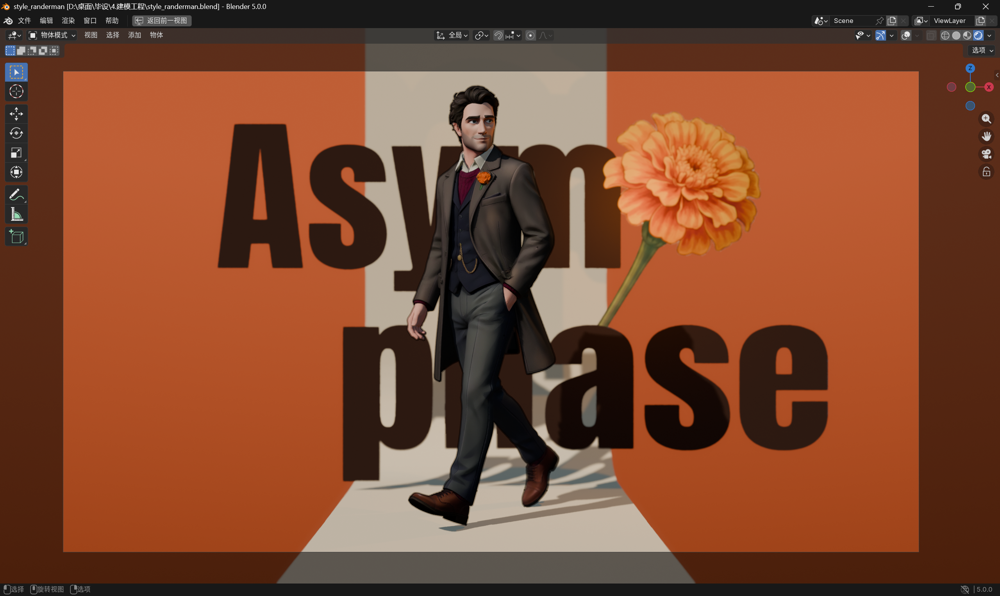
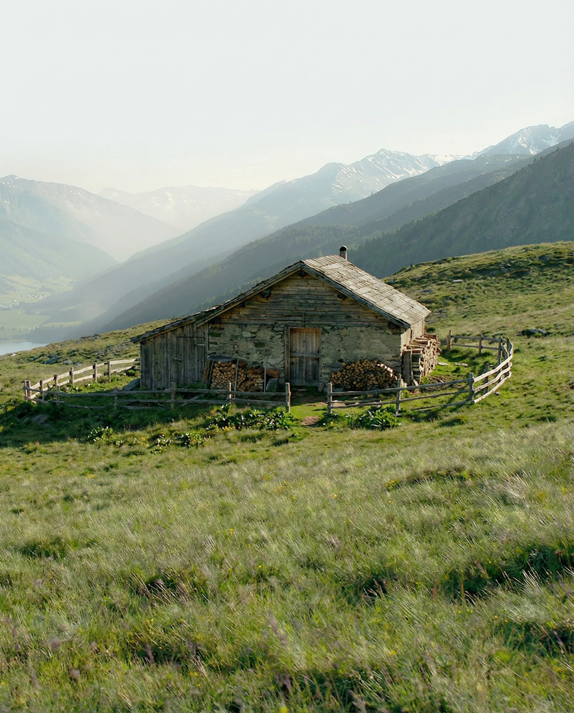
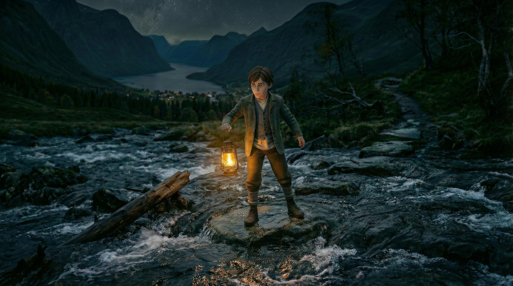
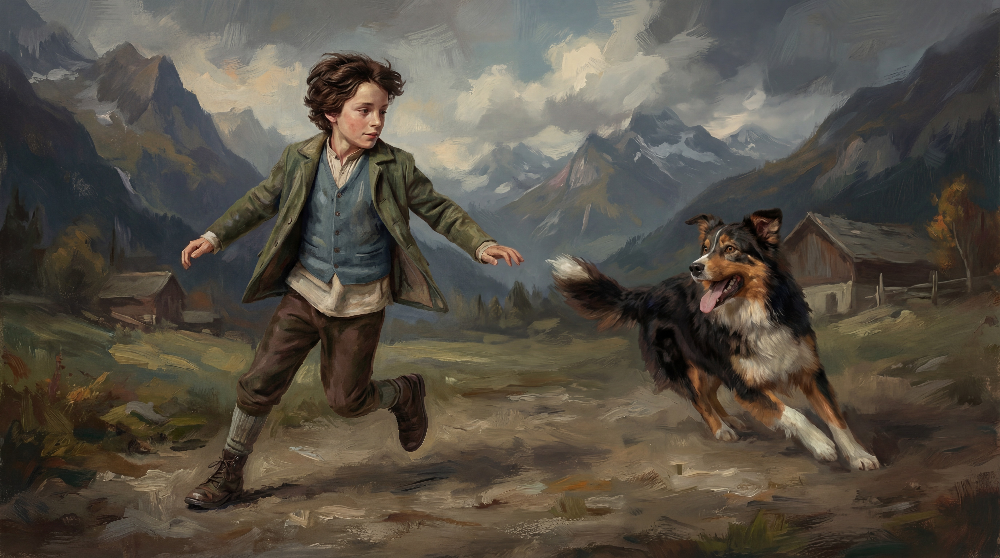
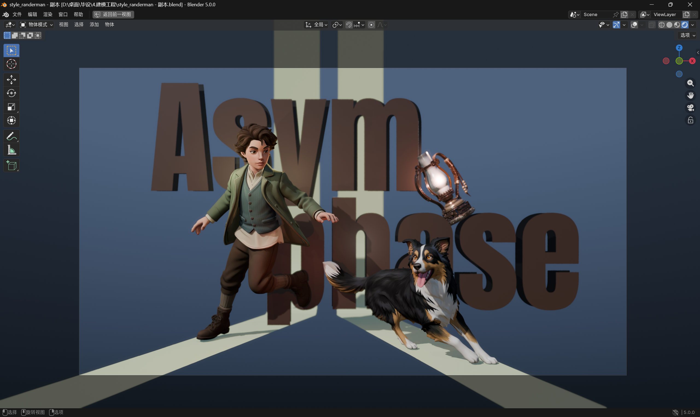
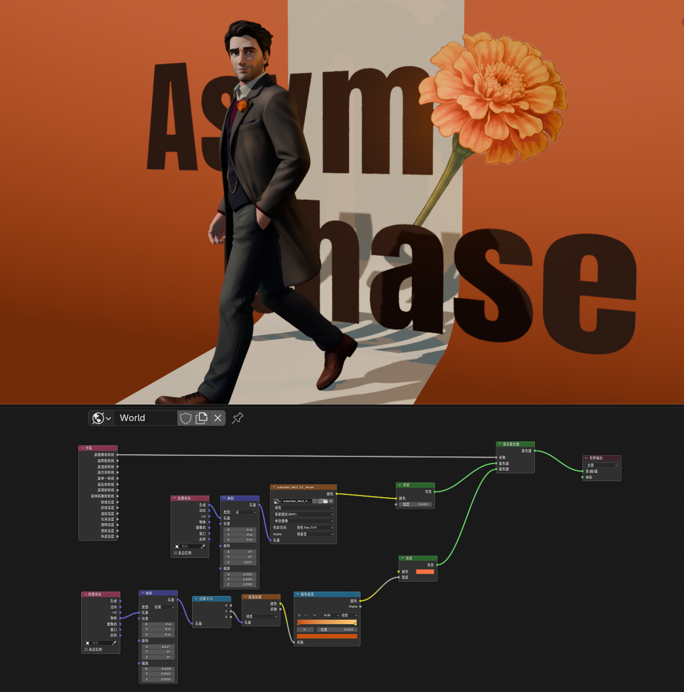
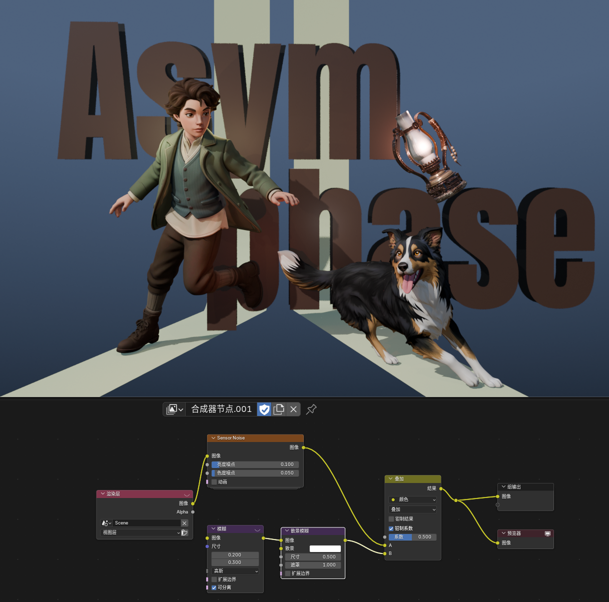

Poster scene reconstruction I
The poster composition is rebuilt as staged three-dimensional space rather than left as a purely graphic surface.
Process
This page records selected parts of the working process behind Asym \ phase. The final posters are not treated as isolated flat images. They are rebuilt in Blender through scene layout, title structure, lighting control, shader setup, and compositing.
Rather than showing every technical step in full detail, this page focuses on several key fragments: working-file construction, visual direction tests, node-based control, and turntable previews derived from the current showcase scenes.
Selected Iterations
This section keeps the process page from reading only as repeated final imagery. The selected frames show character, environment, and scene-direction trials that helped shape the later storyboard and poster language.



Working File Proof

The poster composition is rebuilt as staged three-dimensional space rather than left as a purely graphic surface.

Title structure, character placement, props, and background depth are adjusted together so the scene keeps both graphic clarity and spatial presence.
Visual Development
Before the final visual language became stable, the project moved through multiple stages of translation: realistic image development first, then stylized direction testing. These frames are not final outputs, but part of the process that shaped the project’s eventual tone and identity.


Node-Based Control

World Shader
The world shader setup is used to shape the background atmosphere while keeping the final presentation restrained. It separates environmental color treatment from the main character read, allowing the background to support the poster mood without flattening the figure.

Compositor
Compositor adjustments unify the render through subtle grain, value control, and color grading, bringing the image closer to a finished presentation rather than a raw viewport result.
Motion Preview
Adult Stage
A short turntable derived from the adult reconstruction scene, showing model, title structure, and composition as a spatial arrangement rather than a single-angle poster view.
Childhood Stage
A short turntable derived from the childhood reconstruction scene, extending the poster system into a more explicitly staged space with depth, volume, and tension.
Current Role of This Page
This page shows how the project is built: not only through final images, but through spatial reconstruction, node-based adjustment, and motion-oriented tests that support the final presentation.
It works as both production evidence and a selective technical record, while still keeping the project’s main focus on atmosphere, symbolism, and visual narrative.